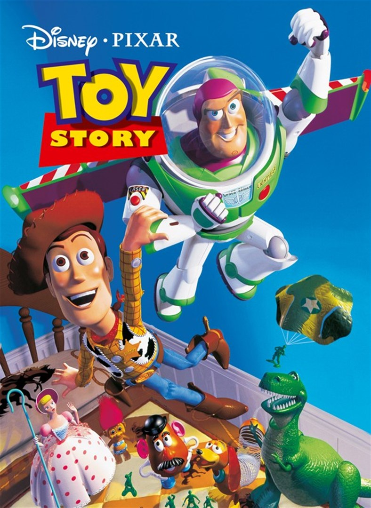

Sonic The Hedgehog (2020)

Frozen (2013)

Alvin and the chipmunks (2007)

The Incredibles (2004)

Ice age (2002)

Toy story (1995)
Toy story (1995)

The Boss Baby (2017)
Text från DB
Text från DB
In a tree farm, three musically inclined chipmunks named Alvin, Simon and Theodore find their tree cut down and sent to Los Angeles. Once there, they meet the frustrated songwriter David Seville, and despite a poor house wrecking first impression, they impress him with their singing talent. Seeing the opportunity for success, everyone makes a pact for them to sing his songs. While that ambition proves a frustrating struggle with the difficult trio, the dream does come true after all. However, that success presents its own trials as their unscrupulous record executive, Ian Hawke, plans to break up this family to exploit the Chipmunks. Can Dave and the Chipmunks discover what they really value amid the superficial glamour around them?
Bob Parr (A.K.A. Mr. Incredible), and his wife Helen (A.K.A. Elastigirl), are the world's greatest famous crime-fighting superheroes in Metroville, always saving lives and battling evil on a daily basis. But 15 years later, they have been forced to adopt civilian identities and retreat to the suburbs where they have no choice but to retire as superheroes to live a "normal life" with their three children Violet, Dash and Jack-Jack, who were born with secret superpowers. Itching to get back into action, Bob gets his chance when a mysterious communication summons him to a remote island for a top-secret assignment. He soon discovers that it will take a super family effort to rescue the world from total destruction
Back when the Earth was being overrun by glaciers, and animals were scurrying to save themselves from the upcoming Ice Age, a sloth named Sid, a woolly mammoth named Manny, and a saber-toothed tiger named Diego are forced to become unlikely heroes. The three reluctantly come together when they have to return a human child to its father while braving the deadly elements of the impending Ice Age.
A little boy named Andy loves to be in his room, playing with his toys, especially his doll named "Woody". But, what do the toys do when Andy is not with them, they come to life. Woody believes that his life (as a toy) is good. However, he must worry about Andy's family moving, and what Woody does not know is about Andy's birthday party. Woody does not realize that Andy's mother gave him an action figure known as Buzz Lightyear, who does not believe that he is a toy, and quickly becomes Andy's new favorite toy. Woody, who is now consumed with jealousy, tries to get rid of Buzz. Then, both Woody and Buzz are now lost. They must find a way to get back to Andy before he moves without them, but they will have to pass through a ruthless toy killer, Sid Phillips
Seven-year-old Tim Templeton has always had an overactive imagination--and for the past seven years--life has been all peaches and cream, getting all the love and affection from his caring parents. However, after the arrival of Boss Baby, an unexpected new brother dressed in a black suit complete with a tie and a briefcase, little by little, Tim realises that the cute newcomer has taken over the whole house, robbing him of his happiness. But, soon, Tim and the new boss in a diaper will need to put differences aside and join forces, as a sneaky scheme involving the head of Puppy Co. threatens to tilt the balance of power towards their insidiously adorable furry antagonists. Now, the next pet convention is only in two days. So, brothers, hurry up.